Direction
- Président : M. Bekkaoui El Bekkay
- Fondateur / Entraîneur principal : Abdelmajid Farsi
- Trésorier : M. El Majnioui Abdelkader
- Secrétaire général : M. Mabrouk Abdelhak
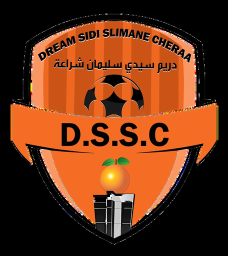
D.S.S.C.Berkane · Association de Football · Sponsoring
Plus qu’une association, Dream Sidi Slimane Cheraa forme garçons et filles dans un cadre inclusif et motivant, en alliant sport, éducation et engagement pour la communauté.
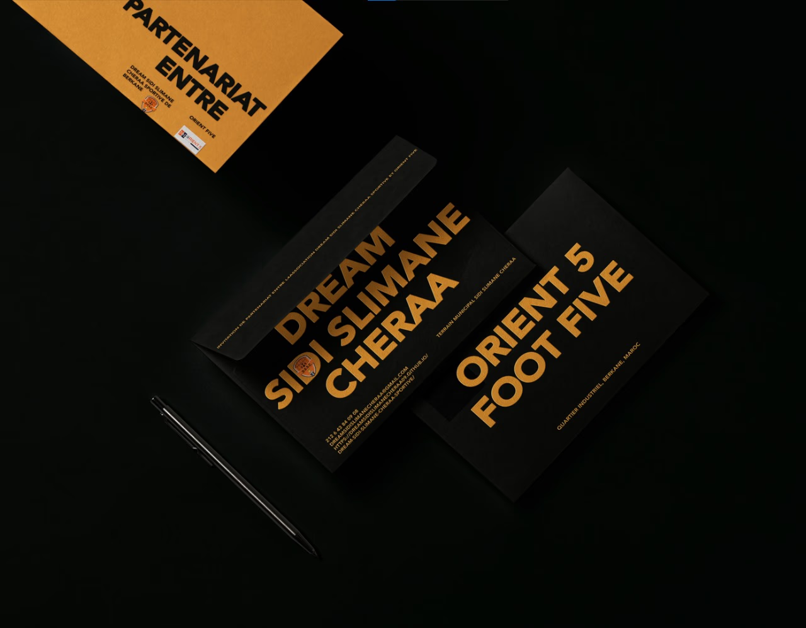
Ensemble pour l’excellenceL’association
Moments de départ marquants
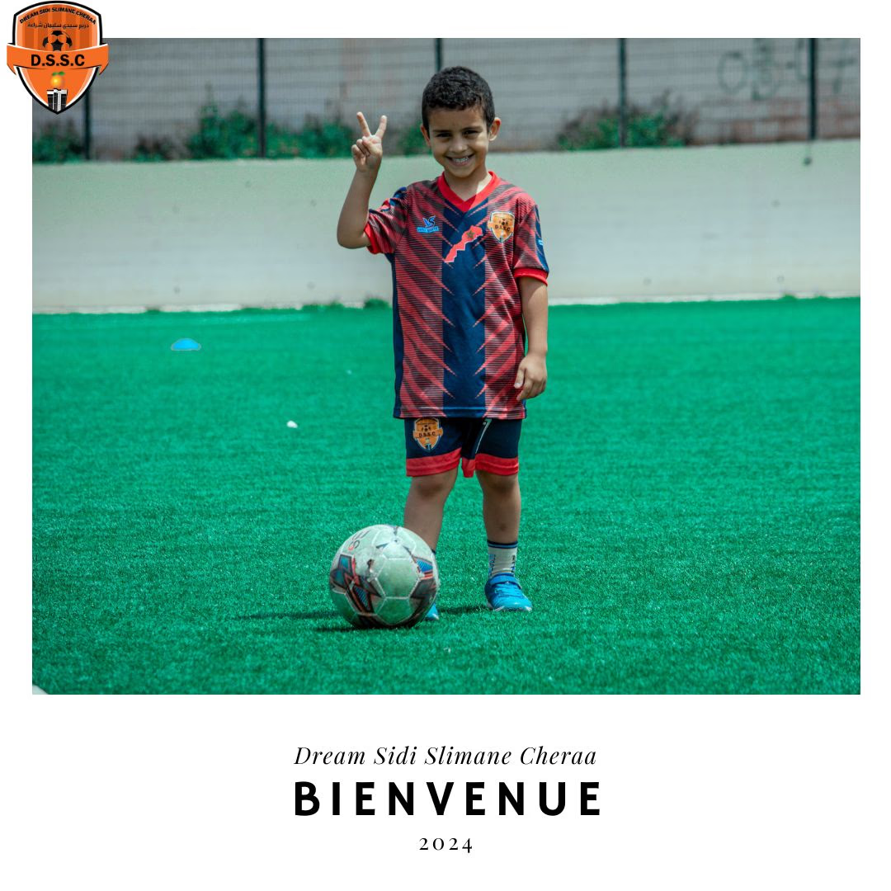
Opportunités de partenariat et appel au sponsoring
Votre contribution participe directement à la formation et à l’épanouissement de jeunes footballeurs, tout en valorisant votre image auprès des familles et de la communauté sportive locale.
1. Académie indépendante Dream Sidi Slimane Cheraa - formation complète U6 à U17.
2. Partenariat Académie Orient Five - encadrement de qualité pour les catégories U6 à U12.
Soutien financier pour le matériel, les infrastructures et les activités.
Contribution pour l’organisation de stages, matchs et événements éducatifs.

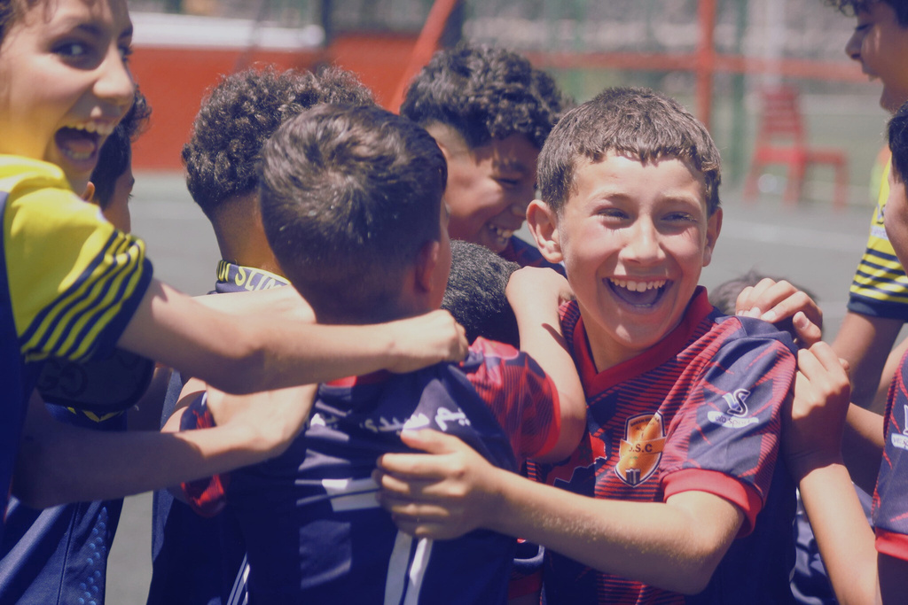
Nos services majeurs
Abdelmajid Farsi
Entraîneur, licencié de diplôme C Caf, expert en formation footballistique.
Taha Kaddani
Entraîneur, licencié de diplôme D Caf.
Aya Metouassi
Entraîneur, licencié de diplôme D Caf.
Participation régulière à des matchs et tournois locaux et régionaux, permettant aux joueurs de mettre en pratique leurs compétences et d’acquérir une expérience précieuse en situation réelle.
Programme d’entraînement
U6 à U17, garçons et filles. Développement technique, tactique et physique, respect et esprit d’équipe. Cadre inclusif et motivant.
U6 à U12. Pédagogie professionnelle, installations haut de gamme, épanouissement dans un cadre sain. Professionnalisme et convivialité.
Parcours et résultats de l’équipe féminine
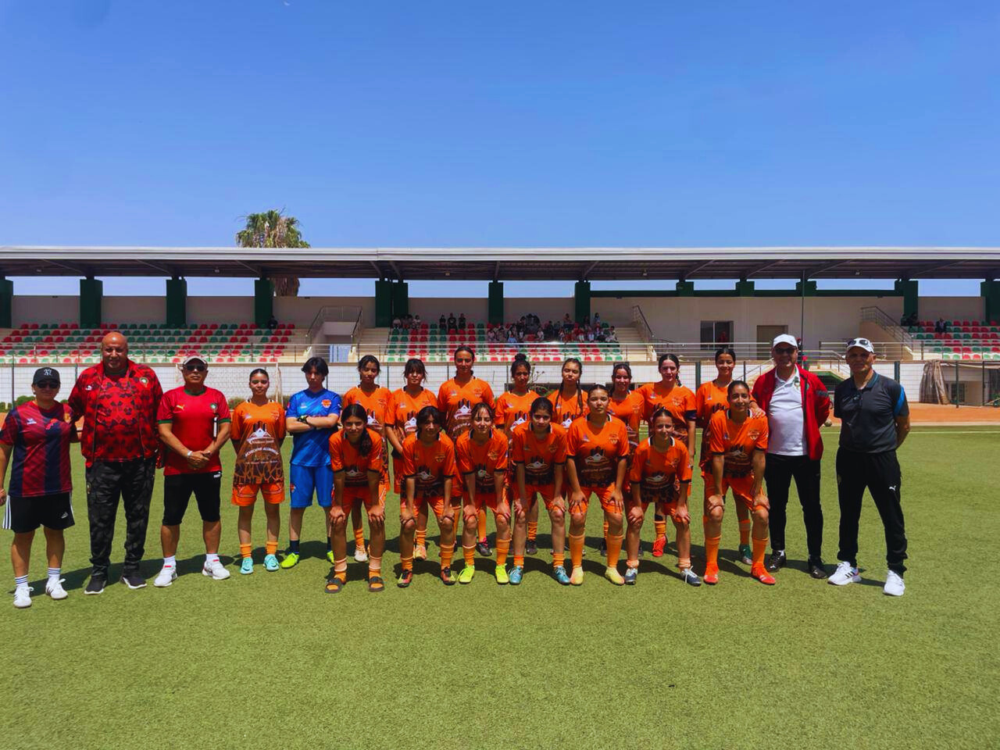
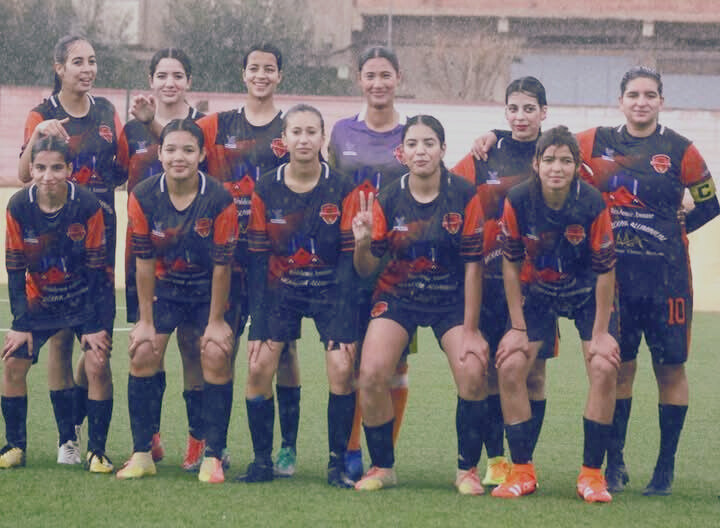
Championnat de ligue Orientale

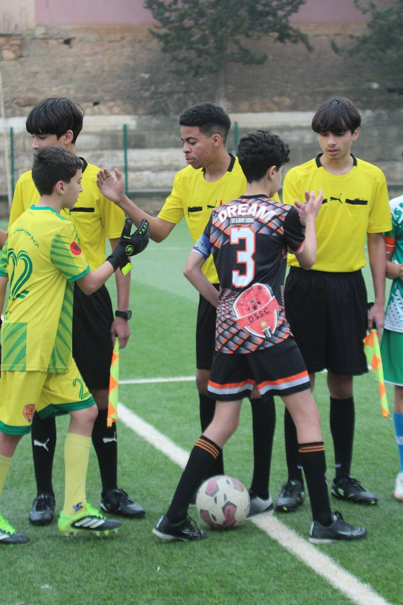
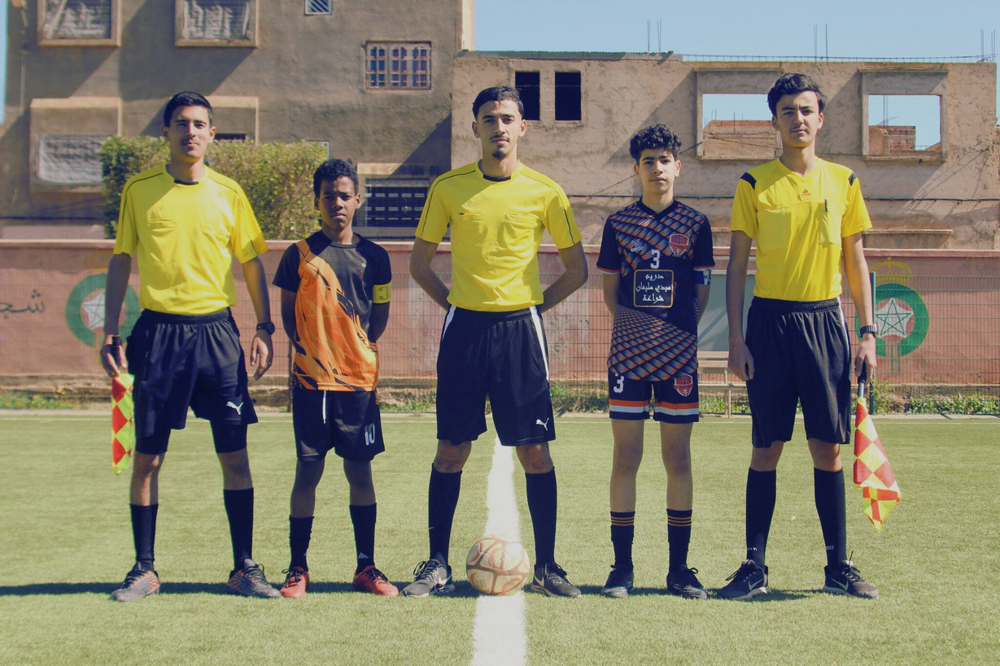
Pendant la saison 2025-2026, l’association Dream Sidi Slimane Cheraa a rejoint la compétition et maintenant le rôle de notre catégorie U13 (garçons) d’enchaîner et s’affronter contre les équipes de la ligue orientale.
Plus qu’une association
En plus du football, nous organisons des activités enrichissantes pour le développement personnel de nos jeunes : distribution de certificats d’excellence académique, sorties ludiques et excursions sportives, renforçant la cohésion et le plaisir d’apprendre en équipe.
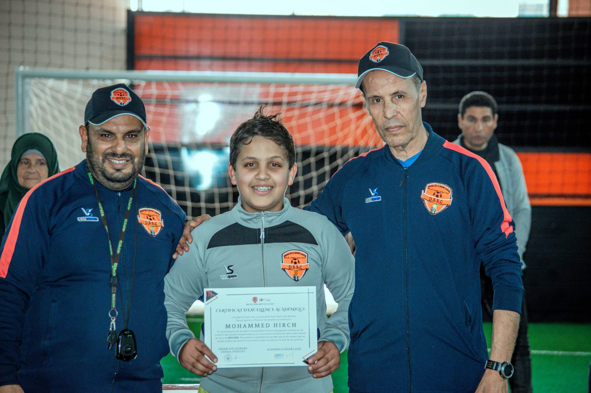
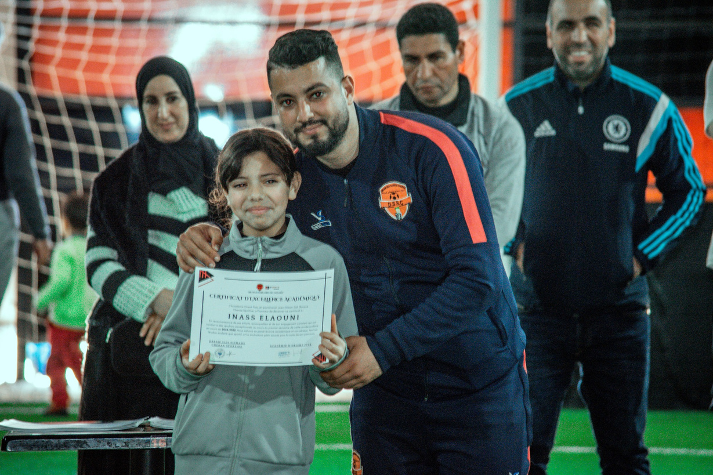
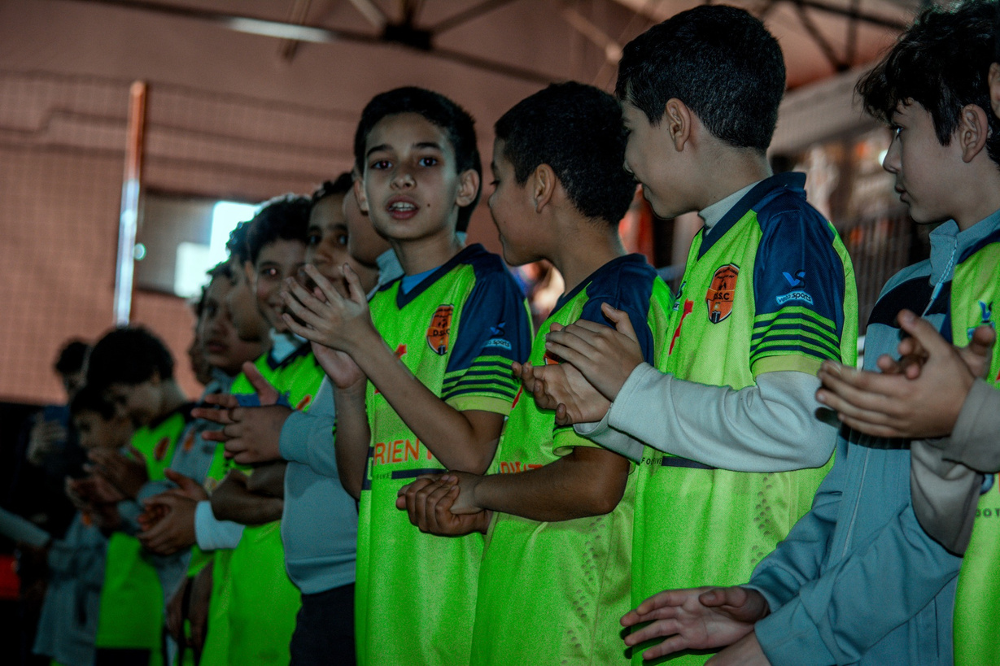
L’association Dream Sidi Slimane Cheraa participe régulièrement à des actions environnementales et écologiques, telles que la Journée mondiale de la forêt et de l’eau, en partenariat avec les autorités locales et les organismes concernés, afin de sensibiliser les jeunes et la communauté à la protection de l’environnement et au développement durable.
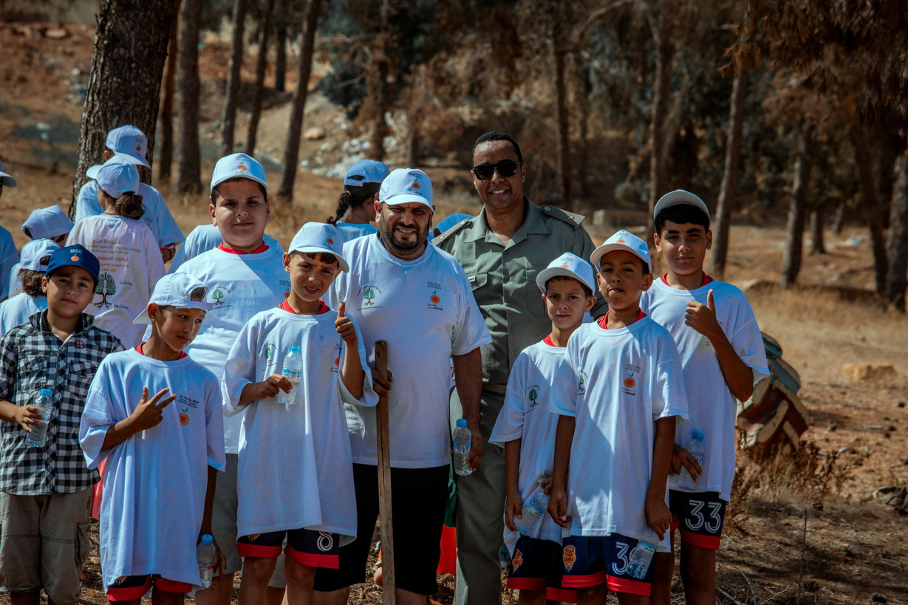
Contact
#BERKANE-EN-AVANT